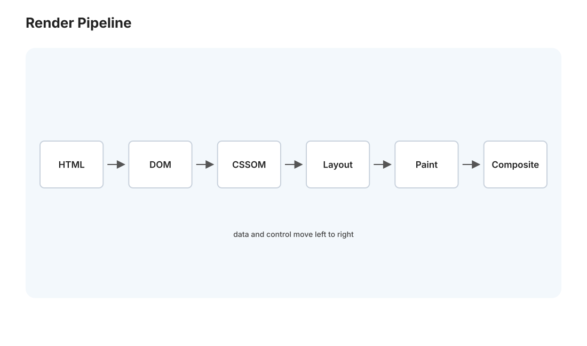
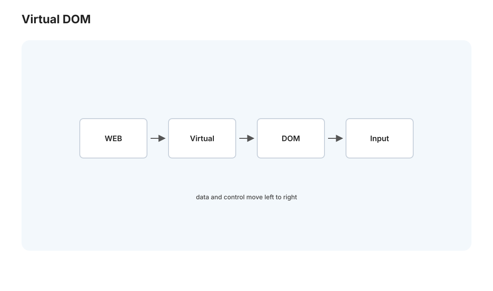

本页目录
全栈 III · 浏览器与前端工程
对标：MDN / High Performance Browser Networking / React 文档 ｜ 前置：web-01/02、net-02（HTTP 缓存） 请求链的另一端——浏览器与前端。以你的 React SPA（Medusa，Vite 构建）为标本，讲清浏览器怎么把 HTML/CSS/JS 变成你看到的界面（渲染管线）、React 的核心思想（声明式 + 虚拟 DOM）、前端工程化（打包、为什么要 Vite）、以及前端性能。这一页也回收 comfy/math 那些站点（你的博客站）背后的前端原理。
学习层：状态已经更新，为什么这一帧仍然没有送达？
1. 具体谜题：同一个状态变更，哪一个能赶上下一帧？
仪表盘每 16.7 ms 需要交付一帧。一次状态更新可以是移动一个已经合成的面板、给 1000 行列表重新计算布局、或执行 24 ms 的同步 JavaScript。先预测：
- 哪种更新可以只走 composite，最可能不触发 layout？
- 哪种更新即使 React diff 很小，也可能错过 60 Hz 的 frame deadline？
- CSS、同步 script 和数据请求分别在哪个时点阻塞首屏或交互？
实验台把 React 状态变化、主线程任务和浏览器阶段放进同一条 frame timeline；先选“会送达/会丢帧”，再查看 layout、paint、composite 的证据。这里测的是交付机制，不是凭肉眼把“快”归因给 React。
2. 最小模型：声明树到像素的两条账本
浏览器账本是
React 账本则是 state → virtual tree → diff → DOM patch。前者决定主线程和渲染器的工作，后者决定需要提交哪些 DOM 变化；两者不是同一层的性能证明。若一帧预算为 B，主线程工作为 J，布局/绘制/合成成本为 R，粗略送达条件是
transform/opacity 在满足合成层条件时可令布局与绘制成本下降，但这不是对所有 CSS 属性的普遍承诺。
3. 正式机制与不变量：UI 可预测，交付也要有预算
- 声明式不变量：给定同一 state、props 和稳定 key，
UI=f(state)的逻辑结果应一致；副作用在useEffect等边界处可追踪。 - 布局读写分离：先批量读取尺寸，再批量写样式，避免交替读写触发强制同步布局；长任务应切片或移出首屏关键路径。
- 资源交付证据：CSSOM 形成、脚本是否
defer、字体/图片/JS 是否命中缓存，会改变首屏可用时间；bundle 哈希只解决缓存失效，不替代加载预算。 - 帧级不变量：在声明的 frame budget 内完成关键交互，不能用平均 FPS 掩盖 p95/p99 的长任务和 INP。
因此虚拟 DOM 不是“无需关心浏览器成本”的许可证。应把 state diff、实际 DOM 变化、布局/绘制成本和 frame deadline 分开测量。
4. 失败边界与迁移任务
不同浏览器、设备 GPU、字体、图片解码和后台节流会改变常数；transform 也可能因图层内存或合成条件失效；React 的重渲染优化不能修复同步第三方脚本或过大的首屏 bundle。实验只使用固定成本，不能替代 Performance panel、Long Tasks、LCP/INP/CLS 的真实采样。
迁移任务：从 Medusa 的一个列表交互取一段 performance trace，分别标出网络、脚本、React commit、layout、paint 和 composite；再给“内容型博客、SEO 产品页、交互仪表盘”选择 SSG/SSR/SPA，并写出首屏与更新交付的证据标准。
JavaScript 失效时的静态读法：60 Hz 的预算取 16.7 ms；先比较主线程总成本，再看是否包含 layout/paint。React diff 的大小不能单独推出是否按时送达。
| 更新轨迹 | 主线程成本 | layout/paint | 结果（16.7 ms） | 关键机制 |
|---|---|---|---|---|
合成面板 transform |
3 ms | 否/低 | 送达 | compositor 可直接移动图层 |
| 单次 class 更新 | 13 ms | 是 | 送达但有余量 | 样式变化需要重新计算几何 |
| 1000 行列表 | 24 ms | 是 | 错过一帧 | DOM/布局成本超过预算 |
| 同步脚本 | 31 ms | 阻塞渲染 | 错过一帧 | 主线程未到达绘制阶段 |
1. 浏览器渲染管线:HTML 怎么变成像素

浏览器拿到 HTML/CSS/JS，经过一条渲染管线变成屏幕像素（🔗 comp 线的解析在浏览器的化身）：
- 解析 HTML → DOM 树（文档对象模型，页面结构的树）+ 解析 CSS → CSSOM（样式规则）。
- 合成渲染树（DOM + 样式）→ 布局（layout/reflow）（算每个元素的位置尺寸）→ 绘制（paint）（填像素）→ 合成（composite）（图层叠合）。
- JavaScript 可以随时修改 DOM/CSSOM → 触发重新布局/绘制。
性能关键：布局（reflow）和绘制是昂贵的——频繁改 DOM 触发反复 reflow 会卡。"最小化布局抖动"是前端性能的核心（批量改 DOM、用 transform/opacity 走合成层避开 reflow）。这解释了为什么直接大量操作 DOM 慢——引出 React。
关键渲染路径与阻塞：CSS 阻塞渲染（要等 CSSOM）、同步 JS 阻塞解析（<script> 会停下 HTML 解析）——所以 JS 常放底部或用 defer/async（你的博客站模板里 <script defer> 正是这个原因，🔗 net-02 减少阻塞）。
2. React：声明式 UI 与虚拟 DOM

直接操作 DOM 又慢又易错（手动同步"数据"和"界面"是 bug 温床）。React 的核心思想——声明式：你写 UI = f(state)（界面是状态的函数），只管描述"给定这个状态，界面长什么样"，不管怎么从旧界面变到新界面（React 来算）。
- 虚拟 DOM + diff：状态变了，React 在内存里算出新的虚拟 DOM 树、和旧的 diff、只把变化的部分应用到真实 DOM——最小化昂贵的真实 DOM 操作（第 1 节的 reflow）。"声明想要的结果、让框架算最小变更"（🔗 与 SQL 声明式 db-02、函数式 pl-02 同一哲学）。
- 组件化：UI 拆成可复用组件（函数 + props 输入 + state），组合成树——关注点分离 + 复用。
- 单向数据流：数据从父流向子（props）、状态变更触发重渲染——可预测（对比双向绑定的隐式魔法）。
- Hooks（
useState/useEffect）：函数组件里管状态和副作用——副作用（数据获取、订阅）显式隔离在useEffect（🔗 pl-02 纯函数 vs 副作用的分离思想）。
读法：React 用"声明式 + 虚拟 DOM diff"把'手动同步数据与界面'这个 bug 之源自动化了——你的 Medusa SPA、博客站都受益于此。理解"UI = f(state)"，前端心智就理顺了。
3. 前端工程化:为什么需要构建工具
现代前端不是几个 .js 文件——是模块化的源码 + 依赖 + 需要转译/打包。构建工具（Vite/webpack）干这些：
- 模块打包：把几百个模块 +
node_modules依赖打成浏览器能高效加载的少数文件（解决 net-02 的"减少请求数"）。 - 转译：TypeScript/JSX/新语法 → 浏览器支持的 JS（Babel/esbuild）。
- 优化：tree-shaking（删没用到的代码）、代码分割（按路由懒加载）、压缩、内容哈希文件名（
app.a3f2.js——内容变才变名，配合 net-02 的长缓存：文件不变就永久缓存，变了自动失效）。
你的 Medusa 前端为什么用 Vite（memory 记录的"Vite 构建化根治 unpkg CDN 白屏"）：早期用浏览器内编译 + CDN 依赖（unpkg），CDN 被墙就白屏、且开发版慢。Vite 构建成静态资源本地托管——快、稳、无外部依赖（🔗 和你所有博客站"零 CDN、KaTeX 本地打包"是同一个教训的两次应用：外部 CDN 是可用性风险，能本地就本地）。Vite 的开发时用原生 ESM + esbuild 极快热更新（HMR），生产时 Rollup 打包优化。
4. 前端性能:用户感知的速度
前端性能是用户直接感受的（后端快 10ms 用户无感，首屏慢 1s 用户流失）。核心指标与手段（🔗 net-02 的"减往返 × 减字节 × 减距离"在前端落地）：
- 首屏加载：减小 bundle（代码分割、懒加载）、CDN 分发静态资源、关键 CSS 内联、图片懒加载 + 现代格式。
- 交互流畅：避免布局抖动（第 1 节）、长任务切片（别阻塞主线程超 50ms）、虚拟列表（长列表只渲染可见部分）。
- 感知优化：骨架屏、乐观更新（先更新 UI 再等服务器确认）——让用户觉得快，和真的快同样重要。
- Core Web Vitals：Google 的 LCP（最大内容绘制）/ INP（交互延迟）/ CLS（布局偏移）——现代前端性能的标准度量。
5. SPA vs 其他渲染模式
你的 Medusa 是 SPA（单页应用）——首次加载 JS bundle、之后前端路由 + API 取数据、无整页刷新。取舍：
- SPA：交互流畅（无整页刷新）、前后端分离清晰——但首屏慢（要下载 + 执行大 JS）、SEO 弱（爬虫看到空壳）。
- SSR（服务端渲染，Next.js）：服务端先渲染 HTML、首屏快 + SEO 好——复杂度高。
- SSG（静态生成）：构建时生成静态 HTML——最快、最简单，适合内容站。你的博客站群（ai/math/physics/cs-course）正是 SSG——build_site.py 就是个静态生成器！理解这点，你会发现自己已经在实践 SSG 了。
选择取决于：内容站（博客、文档）→ SSG（你的做法，对）；高交互应用（仪表盘）→ SPA（Medusa 展示层，合理）；要 SEO + 首屏的内容型应用 → SSR。
6. 练习与要点
例 1（reflow 实验） 用 JS 在循环里逐个改 100 个元素的样式（触发多次 reflow）vs 批量改（一次）——测耗时差异。理解"布局抖动"为什么是前端性能杀手，也理解 React 虚拟 DOM 的价值。
例 2（你的构建产物） 看 Medusa 前端 vite build 的输出——bundle 大小、内容哈希文件名、gzip 后体积——对照 net-02 的缓存策略，确认"哈希文件名 + 长缓存"生效。把前端工程化用到自己的系统。
例 3（选渲染模式） 给"个人博客""电商产品页""数据分析仪表盘"各选 SSG/SSR/SPA 并说理由——把渲染模式取舍用到真实场景，并意识到你的博客站群已是 SSG 的正确实践。\(\blacksquare\)
下一页：软工 I——Git 内部原理与测试：版本控制底下的数据结构（你天天用 git 却没看过它的心脏），以及测试的层级与哲学。